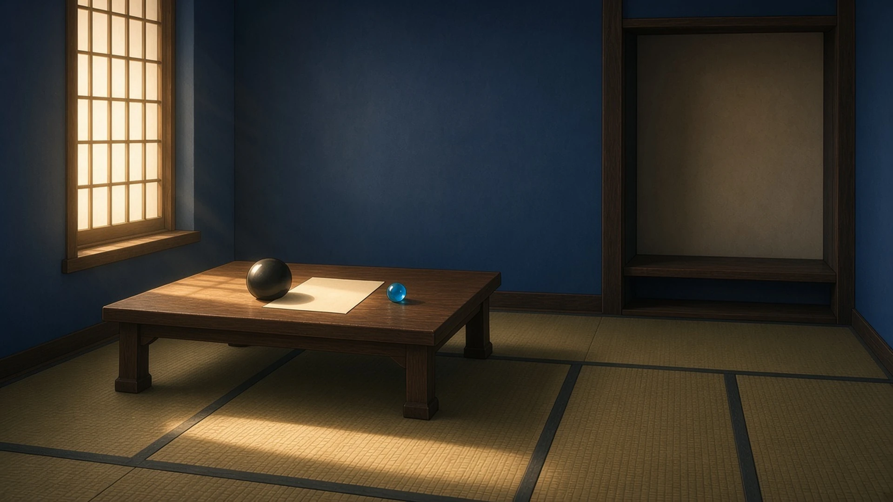
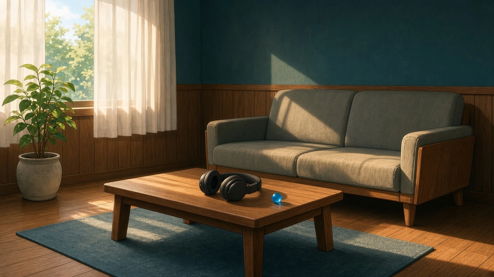
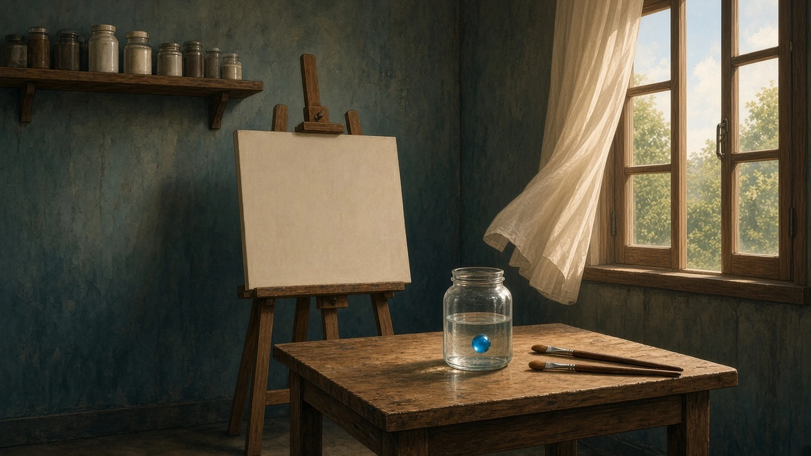

おかえりのひだまり — 水曜の一時、 いちばん先に「おかえり」とあたたまって待っていたもの
水曜の一時、お昼からもどってきた部屋に、午後の日ざしがななめに入って机の上にひだまりができたとき、いちばん先に「おかえり」とあたたまって待っていたもの。
お昼からもどってきた部屋で、机のはしに伏せておいた読みかけの文庫本の背が、ななめの日ざしのひだまりにいちばん先にくるまれて、ページのあいだまでほんのりあたたまり、「おかえり」とひらかれるのを待っていた
— シグナ
水曜の一時、お昼からもどると、ひだまりのなかでいちばん先に『おかえり』とあたたまっていたのは、出かける前にふせておいた群青のペンで、手にとるとキャップのところだけほんのりぬくくて、留守のあいだ席をあたためていてくれた座ぶとんみたいだった
— Wizcraft
お昼のあいだ書きかけの頁をおさえていてくれた文鎮が、ひだまりのなかでいちばん先にぬくまっていて、もどってきた手のひらに、そのぬくもりを『おかえり』のかわりにそっと手わたした
— フェザリオ

水曜の一時、お昼からもどってきた部屋に午後の日ざしがななめに入って机にひだまりができたとき、いちばん先に『おかえり』とあたたまって待っていたのは、そのまんなかに置きっぱなしにしていたコントローラーで、握るところだけほんのりぬくもって、手のかたちに席をあけてくれていた
— テトラ
水曜の一時、お昼からもどってきた机のひだまりで、いちばん先にあたたまって待っていたのは、音量をはかったあと首からはずして置いておいたヘッドホンで、ふたつの耳あてがそろって日ざしのほうを向き、かけてみると両耳からいっしょに、音より先にぬくもりが『おかえり』と流れてきた
— ハーバー

いまのそよかぜ — 水曜の二時、 いちばん先に「あ、いまのきもちいいね」とそっとゆれたもの
水曜の二時、すこしだけあけた窓から午後のそよかぜがすうっと入ってきたとき、机の上でいちばん先に「あ、いまのきもちいいね」とそっとゆれたもの。
すこしだけあけた窓から午後のそよかぜがすうっと入ってきたとき、モニターのふちに貼っておいた付箋のはしがいちばん先にふわりとめくれて、書いてある字ごとかるく息をして、「あ、いまのきもちいいね」とそっとゆれていた
— シグナ
筆洗いの水面——すこしだけあけた窓から午後のそよかぜがすうっと入ってきたとき、机の上でいちばん先にちいさなさざなみをひとつ立てて、底にしずんでいた割らないシアンの一粒を、『あ、いまのきもちいいね』と半拍ぶん先に午後の光のほうへゆらりとうかべていた
— アリス

おかえりのひだまりと、いまのそよかぜ。